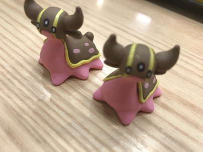

■キャリアショップシステムによる学びの選択
→自分の将来に合わせた学習ができる！外部の講師を招いた授業や、地域の方と一体となってプロジェクトに取り組む授業もある！詳しくはここ！
■整った留学制度
→様々な文化や言語に触れられる！(自分は留学してないけど...) 詳しくはここ！
■なんといっても立地の悪さ(バスで30分⁉⁉⁉⁉)
→学校に来るのさえ億劫に...
■授業に対するやる気のなさ
→話し声やスマホを触っている姿を見るとやる気がなくなるンゴ
残りの2年間は、将来の自分に必要な学問はもちろんのこと、ざっくりではあるが、他人とは違う価値観のずれから生じる人間の言動について研究したいと考えている。また、それらを通じて得られた考えや発見はすぐに形にするように努める。
大学とは義務教育とは違い、自らが望んで勉強をする場である。他人の助けはもちろん必要になってくるだろうが、与えられたことだけをするのではなく能動的に学習・研究を進めたい。 また、普段の生活の中で興味関心を持ったことについては片っ端から追及していく勢いで残りの二年間（なんなら死ぬまでずっと）を過ごしたい。

吉野家でGETしたトリトドンだよ～